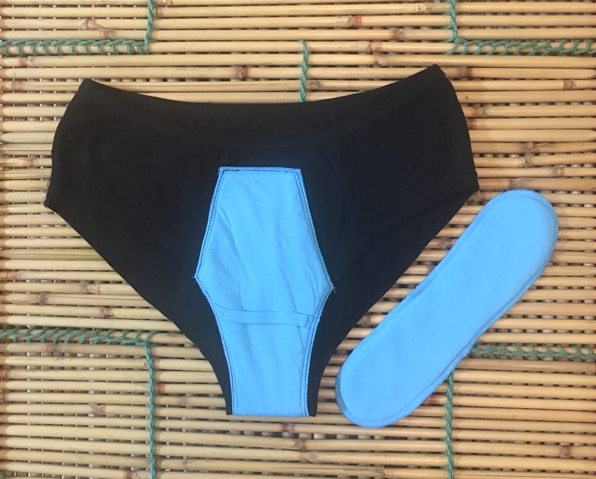

We knew there had to be a better, cleaner, more comfortable and graceful way to live with our period and life’s
other pesky leaks. And it turns out we’re not alone—men have their own troubles, too. Using patent-pending PapntyPro technology, it’s the proper way to be protected from leaks, stains and embarrassment.
PantyProp’s technology features smart, intuitive design. The best in the market. The built-in absorbent organic cotton gusset is perfectly angled to collect your flow immediately, ensuring stain-free comfort, and help stop front, back, or side leaks and stains. It can be worn with or without your cup, tampon or additional pad depending on flow and leak maintenance. For extra added protection, sanitary pads can be worn and locked in and securely held in place in the dri-tech mesh gusset.
What you do get: Security, comfort, leak-free peace of mind and complete discretion — you can’t see any unsightly bumps from the outside. It’s like you’re not even wearing a pad.
What you don’t get: No Leaks, slips, or chafing. Plastic, Polyurethane Laminate (PUL), or plastic. No Embarrassing odors.
